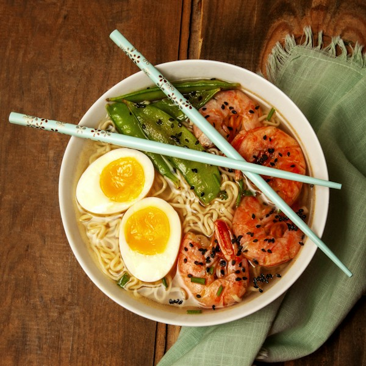
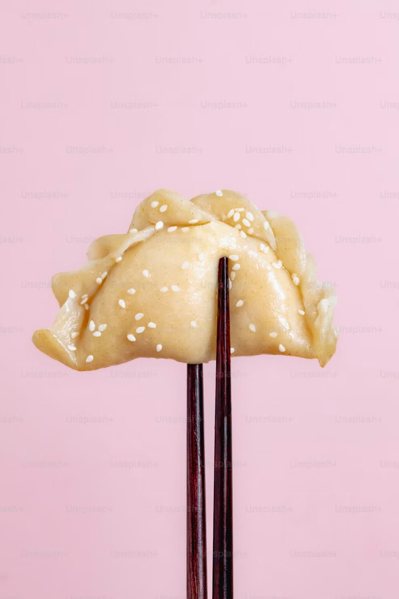

Ramen
Fideos con caldo caliente, carne de cerdo, huevo cocido y verduras. Un plato reconfortante y muy popular.
Ver detalle de RamenAquí tienes el listado de las comidas analizadas en la web. Entra en cada una para ver la explicación completa.

Fideos con caldo caliente, carne de cerdo, huevo cocido y verduras. Un plato reconfortante y muy popular.
Ver detalle de Ramen
Elaboración de pescado crudo, marisco o verdura combinado con base de arroz largo.
Ver detalle de Sushi
Empanadillas rellenas de carne picada o verdura y con semillas, doradas a la plancha y hechas al vapor.
Próximamente